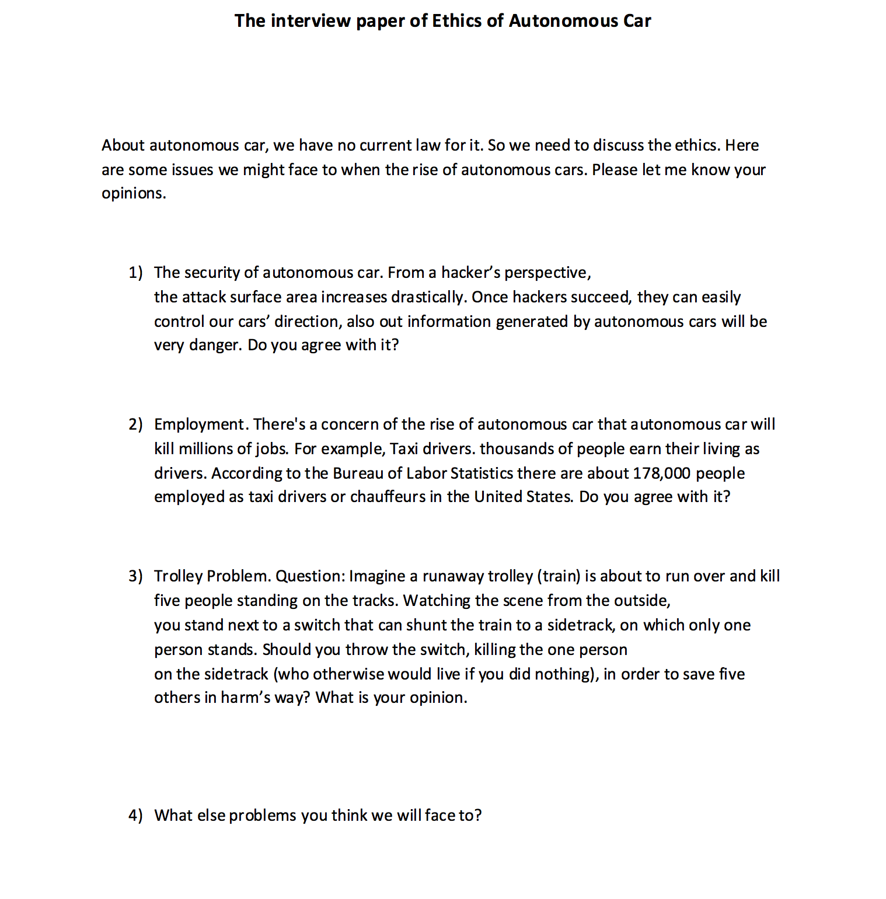

Appendix

Above it's the preperation sheet of my interview. I did my interviews in person.I did two interviews totally.
One is with my partner Brian. The other one is my roommate. They both made their own opinions clear about my question.
I totally have 4 questions about the autonomous cars' issues.
About the common concern, security issue is the biggest part. They do do agree that hackers do pose a threat to autonomous cars,
They are not particularly concerned about being attacked or affected by them. They think of hackers kind of like they think of trained
martial artists. They know they are out there and know that the hackers could definitely cause them harm if the hackers wanted to, but they are fairly certain
that they are not going to be targeted in their every day life.
For the employment part, Brian think the advance of technology is inevitable and to impede that advance for the sake of jobs is simply not a viable option.
For every technological advance, there has always been the threat of people losing their jobs and yet we have more people employed currently than
at any other point in history. So, yes, while I believe that there will be lots of drivers(taxi drivers, truck drivers, pilots, etc.)
who will lose their jobs, I don't find it to be a major concern for myself. And for my roommate, she thinks actually the jobs opportunities are increasing.
However, drivers are kind of job that don't need high education, but most of the increasing job offers are engineers which ask for high education. That's not a
good sign for the society.
For the third question, they think In this instance, They would probably do nothing. In their opinions, their inactions would not constitute a contribution to the
impending tragedy. However, if they intentionally made an action that killed another person, especially one who would not have otherwise dies, then they would
find that unconscionable. On the whole, unless they have some sort of personal, emotional investment in a person, they don't think it's possible to quantify the value of a life.
And about the other concerns of autonomous car, None that they don't think we will overcome. Autonomous cars have been inevitable for years already. While the ethics and morality
of extreme cases are interesting to consider, humans are pretty good at finding practical solutions to tremendous problems. They have great future sight of autonomous cars.